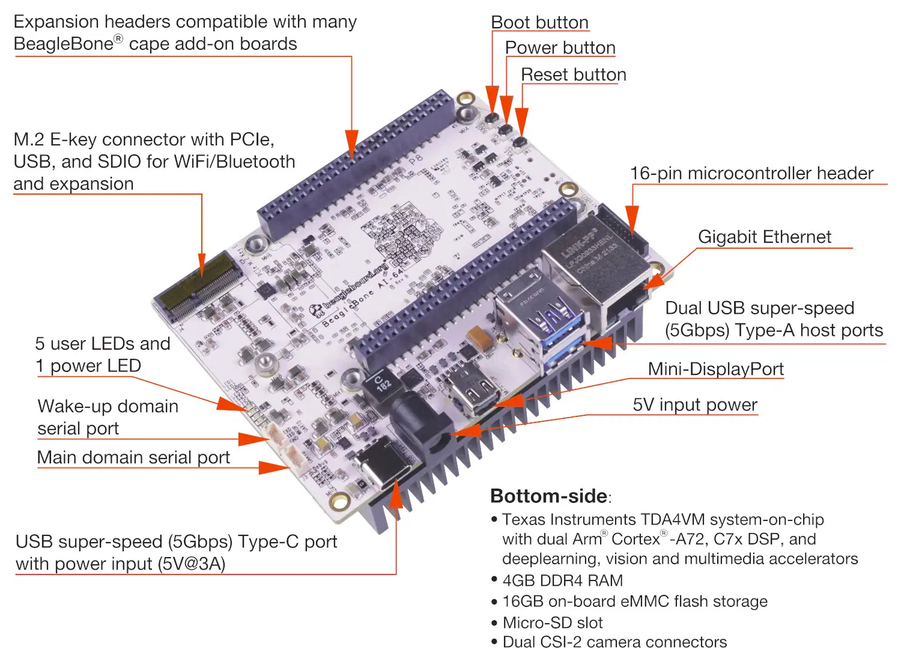
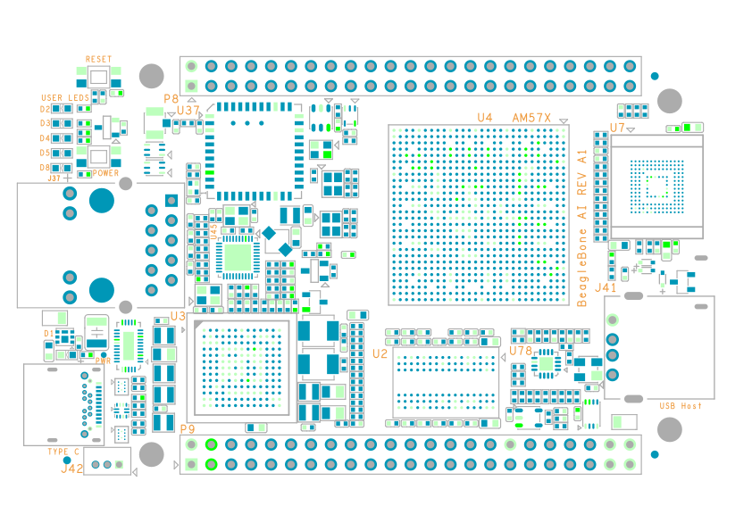

BeagleBoard AI models are certified Open Source Hardware (OSHW). There are two available models of the BeagleBone AI:
BeagleBone AI-64: This small single-board computer has a Texas Instruments TDA4VM chipset (64-bit ARM arm64 architecture).
BeagleBone AI (RevA2): This smaller single-board computer has a Texas Instruments AM5729 chipset (ARMv7 armhf architecture).

BeagleBone AI-64 is a single-board computer (SBC) that provides a complete system with development tools for AI/ML. It utilizes the 64-bit Texas Instruments AM5729 SoC and can be expanded with the BeagleBone cape headers, via hundreds of open-source hardware examples and dozens of CoTS expansion options.
BeagleBoard.org publishes a detailed git repository with all CAD design files as well as a documentation wiki.
The hardware community around all BeagleBone models is very active on the BeagleBoard.org forums. The BeagleBone Google Groups are now archived.
BeagleBone models use the U-Boot bootloader.
BeagleBone models run a Debian GNU/Linux derivative. Instructions for flashing and updating the OS are available here.
The system starts the XFCE desktop environment when it boots. The easiest way to access it is by connecting the device via USB-C.
The Tari suite arm64 builds for Ubuntu will run on the BeagleBoard AI-64.
Some Debian dependencies must be installed:
* Tor must be installed and the control port 9051 will need to be open and configured in /etc/tor/torrc.
* unzip is required to extract the Tari binaries.
* NOTE The Tari suite start_all script requires the GNOME desktop environment. This DE is not recommended on this device so the script should be ignored or modified for XFCE.
Instructions:
* Download the arm64 build of tari_suite from the Tari downloads page.
* Verify the SHA256 checksum for the file.
* Copy the ZIP archive to the device and extract the files with unzip.
* Change the permissions on the Tari binaries to be executable.
* Run the Tari binaries via the CLI.
Additional installation instructions are available in the Tari project repositories.


BeagleBone AI is a miniature single-board computer (SBC) based on the Texas Instruments AM5729. The board is compatible with the BeagleBone Black header and most cape accessories. BeagleBone AI also has an SoC with TI C66x digital-signal-processor (DSP) and embedded-vision-engine (EVE) cores supported through an optimized TIDL machine learning OpenCL API with pre-installed tools.
BeagleBoard.org publishes a detailed git repository with all KiCad design files as well as a documentation wiki.
The hardware community around all BeagleBone models is very active on the BeagleBoard.org forums. The BeagleBone Google Groups are now archived.
BeagleBone models use the U-Boot bootloader.
BeagleBone models run a Debian GNU/Linux derivative. Instructions for flashing and updating the OS are available here.
The system starts a Web configuration interface when it boots. The easiest way to access it is by connecting the device via USB-C, opening a Web browser, and following the instructions here.
When you connect to the device, you will be presented with the on-board filesystem as in the screenshot below. Open START.HTM in your browser to view instructions for updating the firmware, updating Debian, and other maintenance of the device.

The on-board filesystem for the BeagleBoard AI-64 is very small and you will need to format a microSD card (recommended at least 32GB) to copy and run the Tari binaries.
The Tari project does not provide builds for the armhf architecture, so the Tari suite must be compiled from source on the BeagleBoard AI.
Instructions for compiling from source are available in the Tari project repositories.
Some Debian dependencies also must to be installed:
* Tor must be installed and the control port 9051 will need to be open and configured in /etc/tor/torrc.
* unzip is required to extract the Tari binaries.
* NOTE: The Tari suite start_all script requires the GNOME desktop environment. A GUI is not recommended on this device so the script should be ignored.
